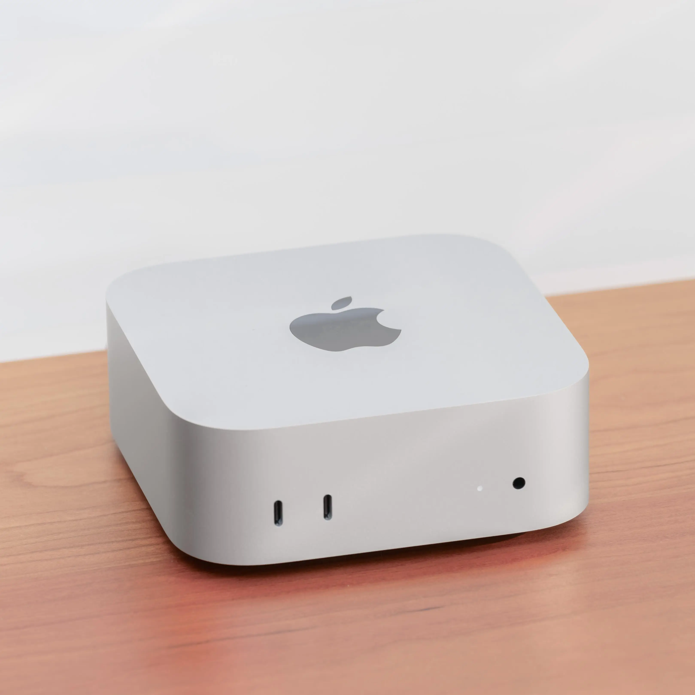
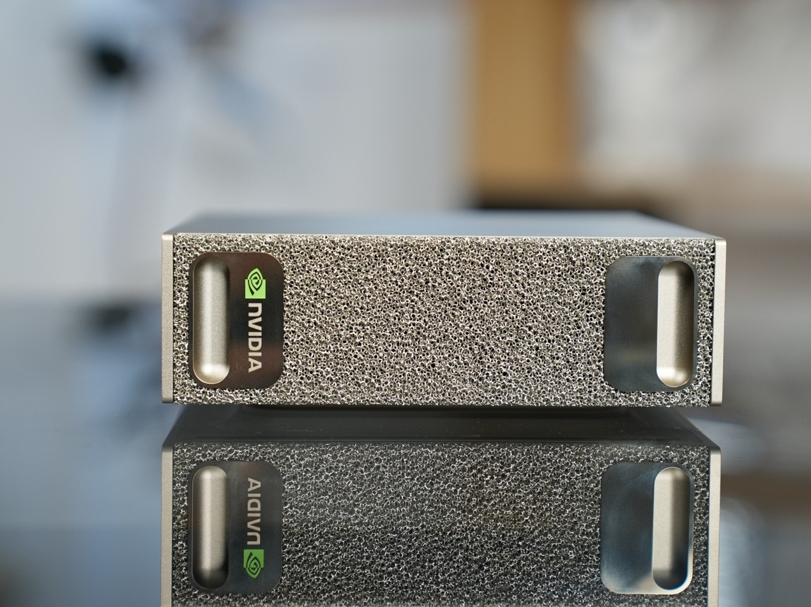

<title>教 tiny 认识 flash-Fin</title>
<meta name="description" content="从一台 Mac Mini 到一台 DGX Spark：用 AReno 给 Ling-3.0-tiny 做 LoRA SFT，补上知识截止之后的新模型。">
<link rel="preconnect" href="https://fonts.googleapis.com">
<link rel="preconnect" href="https://fonts.gstatic.com" crossorigin>
<link rel="stylesheet" href="https://fonts.googleapis.com/css2?family=Archivo:wdth,wght@62..125,500..900&family=IBM+Plex+Mono:wght@400;500;600&family=Noto+Sans+SC:wght@400;500;700;900&display=swap">
<style>
:root{
  --paper: oklch(0.955 0.006 85);
  --panel: oklch(0.99 0.003 85);
  --ink: oklch(0.24 0.012 70);
  --muted: oklch(0.50 0.012 70);
  --rule: oklch(0.86 0.008 80);
  --hatch: oklch(0.88 0.008 80);
  --accent: oklch(0.64 0.17 48);
  --accent-ink: oklch(0.99 0.01 85);
  --accent-soft: oklch(0.93 0.045 62);
  --good: oklch(0.52 0.11 155);
  --good-soft: oklch(0.94 0.035 155);
  --bad: oklch(0.54 0.15 28);
  --bad-soft: oklch(0.94 0.035 28);
  --code-bg: oklch(0.24 0.012 70);
  --code-ink: oklch(0.93 0.006 85);
  --code-dim: oklch(0.66 0.01 80);
  --code-key: oklch(0.78 0.13 58);
  --display: "Archivo", "Noto Sans SC", "Helvetica Neue", Arial, sans-serif;
  --sans: "Noto Sans SC", "PingFang SC", "Hiragino Sans GB", "Microsoft YaHei", sans-serif;
  --mono: "IBM Plex Mono", ui-monospace, "SFMono-Regular", Menlo, Consolas, monospace;
}
@media (prefers-color-scheme: dark){
  :root:not([data-theme="light"]){
    color-scheme: dark;
    --paper: oklch(0.19 0.008 70);
    --panel: oklch(0.235 0.01 70);
    --ink: oklch(0.94 0.006 85);
    --muted: oklch(0.70 0.01 80);
    --rule: oklch(0.34 0.01 70);
    --hatch: oklch(0.30 0.01 70);
    --accent: oklch(0.72 0.16 52);
    --accent-ink: oklch(0.18 0.02 60);
    --accent-soft: oklch(0.32 0.06 55);
    --good: oklch(0.74 0.12 155);
    --good-soft: oklch(0.30 0.05 155);
    --bad: oklch(0.72 0.14 28);
    --bad-soft: oklch(0.30 0.06 28);
    --code-bg: oklch(0.14 0.008 70);
  }
}
:root[data-theme="dark"]{
  color-scheme: dark;
  --paper: oklch(0.19 0.008 70);
  --panel: oklch(0.235 0.01 70);
  --ink: oklch(0.94 0.006 85);
  --muted: oklch(0.70 0.01 80);
  --rule: oklch(0.34 0.01 70);
  --hatch: oklch(0.30 0.01 70);
  --accent: oklch(0.72 0.16 52);
  --accent-ink: oklch(0.18 0.02 60);
  --accent-soft: oklch(0.32 0.06 55);
  --good: oklch(0.74 0.12 155);
  --good-soft: oklch(0.30 0.05 155);
  --bad: oklch(0.72 0.14 28);
  --bad-soft: oklch(0.30 0.06 28);
  --code-bg: oklch(0.14 0.008 70);
}

*{box-sizing:border-box}
html{scroll-behavior:smooth}
@media (prefers-reduced-motion: reduce){html{scroll-behavior:auto}}
body{
  background:var(--paper); color:var(--ink);
  font-family:var(--sans); font-size:18px; line-height:1.7;
  padding-inline:clamp(16px,4vw,48px);
  -webkit-font-smoothing:antialiased;
}
.wrap{max-width:1180px; margin-inline:auto}
h1,h2,h3{text-wrap:balance; margin:0; line-height:1.2}
p{margin:0}
code,.mono{font-family:var(--mono); font-size:.86em}
.lat{font-family:var(--display)}
b,strong{font-weight:700}
a{color:inherit}
:focus-visible{outline:2px solid var(--accent); outline-offset:3px}

/* ---- sticky station bar ---- */
.bar{
  position:sticky; top:env(safe-area-inset-top,0px); z-index:10;
  background:color-mix(in oklch, var(--paper) 90%, transparent);
  backdrop-filter:blur(8px);
  border-bottom:1px solid var(--rule);
  margin-inline:calc(-1 * clamp(16px,4vw,48px));
  padding-inline:clamp(16px,4vw,48px);
}
.bar-in{max-width:1180px; margin-inline:auto; display:flex; align-items:center; gap:20px; overflow-x:auto; scrollbar-width:none}
.bar-in::-webkit-scrollbar{display:none}
.bar .brand{font-family:var(--mono); font-size:12px; letter-spacing:.08em; text-transform:uppercase; color:var(--muted); white-space:nowrap; padding-block:14px}
.bar ol{list-style:none; margin:0; padding:0; display:flex; gap:4px}
.bar a{
  display:flex; align-items:baseline; gap:6px; text-decoration:none; white-space:nowrap;
  font-size:13px; color:var(--muted); padding:14px 10px; border-bottom:2px solid transparent;
}
.bar a .n{font-family:var(--mono); font-size:11px}
.bar a[aria-current="true"]{color:var(--ink); border-bottom-color:var(--accent)}
.bar .keys{margin-left:auto; font-family:var(--mono); font-size:11px; color:var(--muted); white-space:nowrap}
.bar kbd{font-family:var(--mono); border:1px solid var(--rule); border-radius:3px; padding:0 5px; background:var(--panel)}

/* ---- sections ---- */
section{padding-block:clamp(64px,9vw,112px); border-top:1px solid var(--rule); scroll-margin-top:52px}
section.hero{border-top:0; padding-block:clamp(48px,8vw,96px) clamp(56px,8vw,96px)}
.eyebrow{
  font-family:var(--mono); font-size:12px; letter-spacing:.12em; text-transform:uppercase;
  color:var(--muted); display:flex; gap:12px; align-items:center; margin-bottom:18px;
}
.eyebrow .dot{width:8px; height:8px; border-radius:50%; background:var(--accent)}
h2{font-weight:900; font-size:clamp(30px,4.2vw,54px); letter-spacing:-.01em; max-width:20em}
.lede{font-size:clamp(18px,1.6vw,21px); color:var(--muted); max-width:36em; margin-top:18px}
.lede b{color:var(--ink)}
.grid2{display:grid; grid-template-columns:repeat(auto-fit,minmax(min(100%,440px),1fr)); gap:clamp(28px,4vw,56px); margin-top:clamp(36px,5vw,56px); align-items:start}
.label{font-family:var(--mono); font-size:11.5px; letter-spacing:.1em; text-transform:uppercase; color:var(--muted)}
.pull{font-size:clamp(22px,2.3vw,30px); font-weight:700; line-height:1.45; max-width:24em; text-wrap:balance}
.pull em{font-style:normal; color:var(--accent)}

/* ---- hero ---- */
.hero h1{font-weight:900; font-size:clamp(40px,7vw,92px); letter-spacing:-.02em; line-height:1.08; max-width:11em}
.hero h1 .lat{font-stretch:112%; font-weight:850}
.hero .sub{font-size:clamp(19px,1.9vw,24px); max-width:30em; margin-top:22px; color:var(--muted)}
.hero .sub b{color:var(--ink)}
.loop{list-style:none; padding:0; margin:clamp(40px,6vw,64px) 0 0; display:grid; grid-template-columns:repeat(6,1fr); border:1px solid var(--rule); border-radius:10px; background:var(--panel); overflow:hidden}
.loop li{padding:18px 16px 20px; border-left:1px solid var(--rule); display:grid; gap:6px; align-content:start; position:relative}
.loop li:first-child{border-left:0}
.loop .k{font-family:var(--mono); font-size:11px; color:var(--muted); letter-spacing:.08em}
.loop .t{font-weight:700; font-size:17px; line-height:1.35}
.loop .d{font-size:13.5px; color:var(--muted); line-height:1.5}
.loop li.hot{background:var(--accent); color:var(--accent-ink)}
.loop li.hot .k,.loop li.hot .d{color:inherit; opacity:.85}
.loop-foot{display:flex; justify-content:space-between; gap:16px; flex-wrap:wrap; margin-top:12px; font-family:var(--mono); font-size:12px; color:var(--muted)}
@media (max-width:820px){
  .loop{grid-template-columns:repeat(2,1fr)}
  .loop li{border-left:0; border-top:1px solid var(--rule)}
  .loop li:nth-child(even){border-left:1px solid var(--rule)}
  .loop li:nth-child(-n+2){border-top:0}
}

/* ---- figures ---- */
figure{margin:0}
.photo{border-radius:10px; overflow:hidden; background:var(--hatch); aspect-ratio:4/3; max-width:100%}
.photo img{width:100%; height:100%; object-fit:cover; display:block}
figcaption{display:flex; justify-content:space-between; gap:12px; margin-top:10px; font-family:var(--mono); font-size:12px; color:var(--muted)}

/* ---- spec plate ---- */
.plate{border-top:2px solid var(--ink)}
.plate-row{display:grid; grid-template-columns:1fr auto; gap:16px; align-items:baseline; padding-block:14px; border-bottom:1px solid var(--rule)}
.plate-row .v{font-family:var(--display); font-weight:800; font-stretch:108%; font-size:clamp(26px,2.6vw,34px); font-variant-numeric:tabular-nums; line-height:1}
.plate-row .v small{font-size:.5em; font-weight:600; color:var(--muted); margin-left:4px}
.plate-row .s{font-size:13px; color:var(--muted); grid-column:1/-1; margin-top:-6px}

.ratio{margin-top:28px}
.ratio-big{display:flex; align-items:baseline; gap:14px; flex-wrap:wrap}
.ratio-big .a{font-family:var(--display); font-weight:900; font-stretch:115%; font-size:clamp(56px,7vw,96px); line-height:1; color:var(--accent)}
.ratio-big .b{font-family:var(--display); font-weight:700; font-stretch:115%; font-size:clamp(28px,3.2vw,44px); color:var(--muted); line-height:1}
.cells{display:grid; grid-template-columns:repeat(6,1fr); gap:6px; margin-top:16px; max-width:420px}
.cells span{height:34px; border-radius:4px; background:repeating-linear-gradient(135deg,var(--hatch) 0 6px,transparent 6px 10px); border:1px solid var(--rule)}
.cells span.on{background:var(--accent); border-color:var(--accent)}
.ratio p{font-size:15px; color:var(--muted); margin-top:12px; max-width:30em}
.ratio p b{color:var(--ink)}

/* ---- install steps ---- */
.steps{list-style:none; padding:0; margin:0; border-top:2px solid var(--ink)}
.steps li{display:grid; grid-template-columns:40px 1fr auto; gap:14px; align-items:baseline; padding-block:14px; border-bottom:1px solid var(--rule)}
.steps .i{font-family:var(--mono); font-size:13px; color:var(--accent); font-weight:600}
.steps .w{font-weight:700}
.steps code{display:block; color:var(--muted); font-size:12.5px; margin-top:2px; overflow-wrap:anywhere}
.steps .tm{font-family:var(--mono); font-size:13px; white-space:nowrap; font-variant-numeric:tabular-nums}

/* ---- chat ---- */
.chat{background:var(--panel); border:1px solid var(--rule); border-radius:12px; padding:22px; display:grid; gap:14px}
.chat-head{display:flex; justify-content:space-between; font-family:var(--mono); font-size:12px; color:var(--muted); padding-bottom:12px; border-bottom:1px solid var(--rule)}
.msg{max-width:88%; padding:12px 16px; border-radius:12px; font-size:17px; line-height:1.6}
.msg.u{justify-self:end; background:var(--ink); color:var(--paper); border-bottom-right-radius:3px}
.msg.a{justify-self:start; background:var(--bad-soft); border:1px dashed var(--bad); border-bottom-left-radius:3px}
.msg.a .who{font-family:var(--mono); font-size:11px; color:var(--bad); display:block; margin-bottom:4px; letter-spacing:.06em}
.ph{color:var(--muted); font-family:var(--mono); font-size:14px}

.timeline{margin-top:40px; position:relative; padding-top:8px}
.tl-track{height:10px; border-radius:5px; background:linear-gradient(90deg,var(--ink) 0 62%, transparent 62%); border:1px solid var(--ink); position:relative}
.tl-track::after{content:""; position:absolute; left:62%; right:0; top:0; bottom:0; background:repeating-linear-gradient(135deg,var(--hatch) 0 5px,transparent 5px 9px)}
.tl-marks{display:grid; grid-template-columns:62% 1fr; margin-top:12px}
.tl-marks div{font-size:14px; line-height:1.5}
.tl-marks div:last-child{padding-left:14px; border-left:2px solid var(--accent)}
.tl-marks .mono{display:block; color:var(--muted); font-size:12px}
.tl-marks div:first-child{text-align:right; padding-right:14px}

/* ---- LoRA diagram ---- */
.lora{display:grid; grid-template-columns:1fr auto auto; gap:14px; align-items:stretch; margin-top:8px}
.lora .base{border:1.5px solid var(--ink); border-radius:8px; padding:18px; min-height:170px; display:flex; flex-direction:column; justify-content:space-between;
  background:repeating-linear-gradient(135deg,var(--hatch) 0 8px,transparent 8px 14px)}
.lora .base .t{font-weight:700; background:var(--paper); align-self:flex-start; padding:2px 8px; border-radius:4px}
.lora .base .mono{background:var(--paper); align-self:flex-start; padding:2px 8px; border-radius:4px; color:var(--muted); font-size:12px}
.lora .plus{align-self:center; font-family:var(--display); font-size:34px; font-weight:800; color:var(--muted)}
.lora .ad{width:112px; border-radius:8px; background:var(--accent); color:var(--accent-ink); padding:14px 12px; display:flex; flex-direction:column; justify-content:space-between}
.lora .ad .t{font-weight:700; line-height:1.3}
.lora .ad .mono{font-size:12px; opacity:.9}
.bullets{list-style:none; padding:0; margin:20px 0 0; display:grid; gap:10px}
.bullets li{display:grid; grid-template-columns:18px 1fr; gap:10px; font-size:16px}
.bullets li::before{content:""; width:8px; height:8px; margin-top:.7em; background:var(--accent); border-radius:1px}

.cli{margin-top:clamp(40px,5vw,56px); display:grid; grid-template-columns:repeat(auto-fit,minmax(min(100%,320px),1fr)); gap:16px}
.verb{background:var(--panel); border:1px solid var(--rule); border-radius:10px; padding:22px}
.verb .cmd{font-family:var(--mono); font-weight:600; font-size:22px}
.verb .cmd span{color:var(--accent)}
.verb p{font-size:15px; color:var(--muted); margin-top:8px}
.tags{display:flex; flex-wrap:wrap; gap:6px; margin-top:12px}
.tag{font-family:var(--mono); font-size:12px; padding:3px 8px; border:1px solid var(--rule); border-radius:4px}
.tag.on{background:var(--accent); border-color:var(--accent); color:var(--accent-ink)}

/* ---- pipeline ---- */
.pipe{display:flex; flex-wrap:wrap; align-items:stretch; gap:0; margin-top:clamp(36px,5vw,52px)}
.node{background:var(--panel); border:1px solid var(--rule); border-radius:8px; padding:14px 16px; min-width:0; flex:1 1 170px}
.node .label{display:block; margin-bottom:4px}
.node .t{font-family:var(--mono); font-weight:600; font-size:14.5px; overflow-wrap:anywhere}
.node .d{font-size:13px; color:var(--muted); margin-top:4px}
.arrow{flex:0 0 36px; display:grid; place-items:center; color:var(--muted); font-family:var(--mono)}
.split{flex:1 1 220px; display:grid; gap:8px}
.split .node{flex:none}
.split .good{border-color:var(--good); background:var(--good-soft)}
.split .bad{border-color:var(--bad); background:var(--bad-soft)}
.split .good .label{color:var(--good)}
.split .bad .label{color:var(--bad)}
@media (max-width:760px){.pipe{flex-direction:column}.arrow{flex-basis:28px; transform:rotate(90deg)}}

.warn{margin-top:28px; display:grid; grid-template-columns:auto 1fr; gap:14px; align-items:start; padding:16px 18px; border-radius:8px; background:var(--accent-soft)}
.warn .label{color:var(--ink); padding-top:3px}
.warn p{font-size:16px}

.data{display:grid; grid-template-columns:repeat(auto-fit,minmax(min(100%,200px),1fr)); gap:0; border-top:2px solid var(--ink); margin-top:8px}
.data > div{padding:18px 18px 18px 0; border-bottom:1px solid var(--rule)}
.data .v{font-family:var(--display); font-weight:900; font-stretch:112%; font-size:clamp(44px,5vw,64px); line-height:1; font-variant-numeric:tabular-nums}
.data .v.acc{color:var(--accent)}
.data .t{font-weight:700; margin-top:8px}
.data .d{font-size:13.5px; color:var(--muted)}
.langbar{display:flex; height:8px; border-radius:4px; overflow:hidden; margin-top:10px; max-width:200px}
.langbar i{display:block}
.langbar .zh{background:var(--ink)}
.langbar .en{background:var(--muted); opacity:.5}

/* ---- code ---- */
.code{background:var(--code-bg); color:var(--code-ink); border-radius:10px; padding:20px 22px; overflow-x:auto; font-family:var(--mono); font-size:14px; line-height:1.75; margin:0}
.code .c{color:var(--code-dim)}
.code .k{color:var(--code-key); font-weight:600}
.code-cap{display:flex; justify-content:space-between; gap:12px; margin-top:10px; font-family:var(--mono); font-size:12px; color:var(--muted); flex-wrap:wrap}

.math{display:flex; flex-wrap:wrap; align-items:baseline; gap:10px 16px; margin-top:8px}
.math .n{font-family:var(--display); font-weight:900; font-stretch:112%; font-size:clamp(40px,4.6vw,60px); line-height:1; font-variant-numeric:tabular-nums}
.math .n small{display:block; font-family:var(--mono); font-size:11px; font-weight:400; letter-spacing:.08em; color:var(--muted); margin-top:6px}
.math .op{font-family:var(--display); font-size:32px; color:var(--muted)}
.math .n.acc{color:var(--accent)}

.ruler-wrap{overflow-x:auto; margin-top:36px}
.ruler{min-width:620px; display:grid; grid-template-columns:repeat(10,1fr); border-top:2px solid var(--ink); position:relative}
.ruler div{position:relative; padding-top:18px; font-family:var(--mono); font-size:12px; text-align:right; padding-right:2px; font-variant-numeric:tabular-nums; color:var(--muted)}
.ruler div::before{content:""; position:absolute; right:0; top:-2px; width:2px; height:12px; background:var(--ink)}
.ruler div.mk{color:var(--ink); font-weight:600}
.ruler div.mk::before{height:22px; background:var(--accent); width:3px}
.ruler div .note{display:block; font-family:var(--sans); font-weight:500; font-size:12.5px; color:var(--accent); white-space:nowrap; margin-top:4px}
.ruler-legend{font-size:14px; color:var(--muted); margin-top:18px; max-width:44em}

.rules{list-style:none; padding:0; margin:0; counter-reset:r; border-top:2px solid var(--ink)}
.rules li{counter-increment:r; display:grid; grid-template-columns:44px 1fr; gap:12px; padding-block:16px; border-bottom:1px solid var(--rule)}
.rules li::before{content:counter(r); font-family:var(--display); font-weight:900; font-size:28px; line-height:1; color:var(--accent)}
.rules b{display:block; font-size:17px}
.rules span{font-size:15px; color:var(--muted)}

/* ---- A/B ---- */
.qline{margin-top:clamp(32px,4vw,44px); display:flex; align-items:center; gap:14px; flex-wrap:wrap}
.qline .q{font-size:clamp(20px,2.2vw,28px); font-weight:700; background:var(--ink); color:var(--paper); padding:10px 18px; border-radius:10px}
.ab{display:grid; grid-template-columns:repeat(auto-fit,minmax(min(100%,420px),1fr)); gap:16px; margin-top:20px}
.port{border-radius:12px; border:1.5px solid var(--rule); background:var(--panel); padding:20px; display:grid; gap:14px; align-content:start}
.port.after{border-color:var(--good)}
.port-head{display:flex; justify-content:space-between; align-items:baseline; gap:12px; flex-wrap:wrap}
.port-head .t{font-weight:900; font-size:22px}
.port-head .mono{color:var(--muted); font-size:12.5px}
.port.before .t{color:var(--bad)}
.port.after .t{color:var(--good)}
.out{min-height:150px; border:1px dashed var(--rule); border-radius:8px; padding:14px; display:grid; place-items:center; text-align:center}

.checks{margin-top:clamp(36px,5vw,52px)}
.checks-row{display:flex; flex-wrap:wrap; gap:10px; margin-top:14px}
.chk{
  font:inherit; font-size:16px; cursor:pointer; color:var(--ink);
  display:flex; align-items:center; gap:10px; padding:10px 16px 10px 12px;
  background:var(--panel); border:1.5px solid var(--rule); border-radius:8px;
}
.chk .box{width:18px; height:18px; border:1.5px solid var(--muted); border-radius:3px; display:grid; place-items:center; font-size:13px; line-height:1}
.chk .num{font-family:var(--display); font-weight:800; font-stretch:108%}
.chk[aria-pressed="true"]{border-color:var(--good); background:var(--good-soft)}
.chk[aria-pressed="true"] .box{background:var(--good); border-color:var(--good); color:var(--panel)}
.chk[aria-pressed="true"] .box::after{content:"✓"}
.hint{font-size:13px; color:var(--muted); margin-top:10px}

.ctrl{margin-top:36px; display:grid; grid-template-columns:repeat(auto-fit,minmax(min(100%,300px),1fr)); gap:16px}
.ctrl > div{border-top:2px solid var(--ink); padding-top:14px}
.ctrl .t{font-weight:700; margin-top:6px}
.ctrl .d{font-size:14.5px; color:var(--muted); margin-top:4px}

/* ---- close ---- */
.close .pull{margin-top:clamp(28px,4vw,40px)}
.next{margin-top:clamp(40px,5vw,56px); display:grid; grid-template-columns:repeat(auto-fit,minmax(min(100%,300px),1fr)); gap:16px}
.next > div{padding:22px; border-radius:10px; border:1px solid var(--rule); background:var(--panel)}
.next > div.now{background:var(--accent); color:var(--accent-ink); border-color:var(--accent)}
.next .label{color:inherit; opacity:.8}
.next .t{font-weight:900; font-size:22px; margin-top:6px}
.next p{font-size:15px; margin-top:8px; opacity:.9}
footer{border-top:1px solid var(--rule); padding-block:24px 40px; font-family:var(--mono); font-size:12px; color:var(--muted); display:flex; justify-content:space-between; gap:12px; flex-wrap:wrap}
</style>

<nav class="bar" aria-label="章节">
  <div class="bar-in">
    <span class="brand">AReno × Ling-3.0-tiny</span>
    <ol>
      <li><a href="#s1"><span class="n">一</span>Mac Mini</a></li>
      <li><a href="#s2"><span class="n">二</span>乱答</a></li>
      <li><a href="#s3"><span class="n">三</span>DGX Spark</a></li>
      <li><a href="#s4"><span class="n">四</span>数据</a></li>
      <li><a href="#s5"><span class="n">五</span>LoRA SFT</a></li>
      <li><a href="#s6"><span class="n">六</span>看效果</a></li>
      <li><a href="#s7"><span class="n">七</span>下一步</a></li>
    </ol>
    <span class="keys"><kbd>←</kbd> <kbd>→</kbd> 翻节</span>
  </div>
</nav>

<main class="wrap">

<!-- ================= HERO ================= -->
<section class="hero" id="s0">
  <div class="eyebrow"><span class="dot"></span>RSI 闭环 · 最小版</div>
  <h1>从一台 <span class="lat">Mac Mini</span> 开始，教模型学会它不知道的事</h1>
  <p class="sub">Ling-3.0-tiny 的知识截止在 <b class="mono">2026-08-06</b>。之后发布的 <b>Ling-3.0-flash-Fin</b>，它没见过，只能乱答。今天用一台 Mac Mini、一台 DGX Spark 和 AReno，把这件事修好。</p>

  <ol class="loop" aria-label="闭环流程">
    <li><span class="k">01</span><span class="t">新模型发布</span><span class="d">flash-Fin 在 tiny 截止之后</span></li>
    <li><span class="k">02</span><span class="t">发现乱答</span><span class="d">在 hermes 里答错</span></li>
    <li><span class="k">03</span><span class="t">洗日志</span><span class="d">LLM 分析，挑出 bad case</span></li>
    <li><span class="k">04</span><span class="t">整理训练集</span><span class="d">21 个知识点 / 99 条</span></li>
    <li class="hot"><span class="k">05</span><span class="t">LoRA SFT</span><span class="d">500 步，十分钟级</span></li>
    <li><span class="k">06</span><span class="t">当场变好</span><span class="d">同一问题，前后对比</span></li>
  </ol>
  <div class="loop-foot"><span>真实使用 → 日志 → 训练集 → 训回去</span><span>下一轮从 06 回到 02</span></div>
</section>

<!-- ================= 1 ================= -->
<section id="s1">
  <div class="eyebrow"><span class="dot"></span>一 · 这是一台 Mac Mini</div>
  <h2>tiny 就住在里面</h2>
  <p class="lede">Ling-3.0-tiny 是 inclusionAI 开源的 MoE 模型。<b>1.3B 的推理开销，跑出 7.9B 的知识面</b>，一台 Mac Mini 整机就能跑。</p>

  <div class="grid2">
    <figure>
      <div class="photo"></div>
      <figcaption><span>Mac Mini</span><span>¥6,999 · 16G 起步</span></figcaption>
    </figure>

    <div>
      <div class="ratio">
        <span class="label">激活 / 总参</span>
        <div class="ratio-big"><span class="a">1.3B</span><span class="b">/ 7.9B</span></div>
        <div class="cells" aria-label="每次前向约激活六分之一的参数"><span class="on"></span><span></span><span></span><span></span><span></span><span></span></div>
        <p><b>总参 7.9B 决定智能水平</b>，知识装在专家里。<b>激活 1.3B 决定推理开销</b>，每次前向只算约六分之一。</p>
      </div>

      <div class="plate" style="margin-top:32px">
        <div class="plate-row"><span>上下文</span><span class="v">128<small>K</small></span></div>
        <div class="plate-row"><span>推理速度</span><span class="v">168<small>tokens/s</small></span><span class="s">deck 标注，来源 Artificial Analysis</span></div>
        <div class="plate-row"><span>知识截止</span><span class="v mono" style="font-family:var(--mono);font-size:22px">2026-08-06</span></div>
      </div>
    </div>
  </div>

  <div class="grid2">
    <div>
      <span class="label">安装 · 四步约 30 分钟</span>
      <ol class="steps" style="margin-top:10px">
        <li><span class="i">1</span><div><span class="w">下载权重</span><code>snapshot_download('inclusionAI/Ling-3.0-tiny-GGUF')</code></div><span class="tm">≈15 min</span></li>
        <li><span class="i">2</span><div><span class="w">起推理服务</span><code>brew install llama.cpp &amp;&amp; llama-server -m …gguf</code></div><span class="tm">累计 ≈30 min</span></li>
        <li><span class="i">3</span><div><span class="w">发第一个请求</span><code>client.chat.completions.create(...)</code></div><span class="tm">≈1 min</span></li>
        <li><span class="i">4</span><div><span class="w">改一行接入</span><code>base_url = "http://localhost:8080/v1"</code></div><span class="tm">≈1 min</span></li>
      </ol>
    </div>
    <div>
      <p class="pull">服务是 OpenAI 协议，现成的客户端<em>改一行</em>就能连。Q8_0 量化最少 16G 显存。</p>
    </div>
  </div>
</section>

<!-- ================= 2 ================= -->
<section id="s2">
  <div class="eyebrow"><span class="dot"></span>二 · 好用的模型也会遇到问题</div>
  <h2>问它一个它没见过的模型，它会编</h2>
  <p class="lede">这个例子来自 hermes 的历史日志，第四节会讲怎么把它找出来。</p>

  <div class="grid2">
    <div class="chat" role="img" aria-label="hermes 对话：用户问 flash-Fin 是什么，tiny 乱答">
      <div class="chat-head"><span>hermes · Ling-3.0-tiny</span><span>历史会话</span></div>
      <div class="msg u">Ling-3.0-flash-Fin 是什么？</div>
      <div class="msg a"><span class="who">TINY · 乱答</span>说没有这个模型，然后开始乱编。<br><span class="ph">[现场展示日志原文]</span></div>
    </div>
    <div>
      <p class="pull">模型乱答，不是它笨，<em>是它的知识里没有这个东西。</em></p>
      <div class="timeline" aria-label="知识截止时间线">
        <div class="tl-track"></div>
        <div class="tl-marks">
          <div>tiny 知道的世界<span class="mono">截止 2026-08-06</span></div>
          <div>flash-Fin 发布<span class="mono">在截止之后 · tiny 看不见</span></div>
        </div>
      </div>
    </div>
  </div>
</section>

<!-- ================= 3 ================= -->
<section id="s3">
  <div class="eyebrow"><span class="dot"></span>三 · 一台 DGX Spark + AReno</div>
  <h2>那就让它学会：加训一个 LoRA</h2>
  <p class="lede">最轻的改法是 LoRA SFT：<b>base 权重全程冻结</b>，只训一个 rank 16 的 adapter。改坏了就删，base 始终是干净的那一份。</p>

  <div class="grid2">
    <figure>
      <div class="photo"></div>
      <figcaption><span>DGX Spark</span><span>¥32,999 · 128G 统一内存</span></figcaption>
    </figure>
    <div>
      <div class="plate">
        <div class="plate-row"><span>统一内存</span><span class="v">128<small>G</small></span></div>
        <div class="plate-row"><span>deck 里它跑 Ling-3.0-flash</span><span class="v">345<small>tokens/s</small></span><span class="s">124B 总参 / 5.1B 激活</span></div>
        <div class="plate-row"><span>这次的训练量</span><span class="v">500<small>步</small></span><span class="s">99 条问答 × 10 epoch，十分钟级别</span></div>
      </div>

      <div style="margin-top:32px">
        <span class="label">LoRA：只动一小块</span>
        <div class="lora" style="margin-top:10px">
          <div class="base"><span class="t">Ling-3.0-tiny base</span><span class="mono">7.9B · 冻结，不更新</span></div>
          <div class="plus">+</div>
          <div class="ad"><span class="t">adapter</span><span class="mono">rank 16<br>只训这里</span></div>
        </div>
      </div>
    </div>
  </div>

  <div class="cli">
    <div class="verb">
      <div class="cmd"><span>areno</span> train</div>
      <p>训练：一条命令，<code>--algo</code> 换算法</p>
      <div class="tags"><span class="tag on">SFT</span><span class="tag">DPO</span><span class="tag">GSPO</span><span class="tag">GRPO</span><span class="tag">PPO</span></div>
    </div>
    <div class="verb">
      <div class="cmd"><span>areno</span> serve</div>
      <p>推理：OpenAI 兼容的 <code>/v1/chat/completions</code>，训完直接起服务</p>
      <div class="tags"><span class="tag">base</span><span class="tag on">base + LoRA adapter</span></div>
    </div>
    <div class="verb">
      <div class="cmd">不上云</div>
      <p>训练和推理收在同一个 CLI 里，不用另搭推理栈。任何 OpenAI 客户端都能直接连。</p>
    </div>
  </div>
</section>

<!-- ================= 4 ================= -->
<section id="s4">
  <div class="eyebrow"><span class="dot"></span>四 · 训练数据哪来</div>
  <h2>从 hermes 日志里洗出 bad case</h2>
  <p class="lede">这就是 Dream RSI 的路子：<b>真实使用 → 日志 → 洗出失败样本 → 训练数据 → 训回去</b>。我们做它的最小版。</p>

  <div class="pipe" aria-label="日志导出流程">
    <div class="node"><span class="label">会话落盘</span><div class="t">~/.hermes/state.db</div><div class="d">每次会话自动记录</div></div>
    <div class="arrow" aria-hidden="true">→</div>
    <div class="node"><span class="label">只读导出</span><div class="t">export_sharegpt.py</div><div class="d">真实轨迹转 ShareGPT</div></div>
    <div class="arrow" aria-hidden="true">→</div>
    <div class="node"><span class="label">全部轨迹</span><div class="t">all.jsonl</div><div class="d">ShareGPT 格式</div></div>
    <div class="arrow" aria-hidden="true">→</div>
    <div class="node"><span class="label">逐条分析</span><div class="t">LLM</div><div class="d">读懂内容，判断答得对不对</div></div>
    <div class="arrow" aria-hidden="true">→</div>
    <div class="split">
      <div class="node good"><span class="label">happy case</span><div class="d">回答正确，完成了请求 · 将来的 SFT 正样本</div></div>
      <div class="node bad"><span class="label">bad case</span><div class="d">答错、编造、没完成请求 · flash-Fin 那次就在这里</div></div>
    </div>
  </div>

  <div class="warn">
    <span class="label">为什么用 LLM</span>
    <p>flash-Fin 那次对话是完整跑完的，只看结构分不出对错。所以 happy / bad 交给 <b>LLM 读内容来判断</b>。</p>
  </div>

  <div class="grid2">
    <div>
      <p class="pull">乱答里没有标准答案。知识注入要的是<em>规范答案</em>，所以训练集来自公开材料，每一行都带 sources。</p>
      <p class="lede" style="font-size:16px">bad case 告诉我们模型缺哪块知识；这一轮不直接拿日志训，bad case 以后还可以做 DPO / GSPO 的 rejected 侧。</p>
    </div>
    <div>
      <span class="label">examples/sft/ling_flash_fin</span>
      <div class="data">
        <div><div class="v">21</div><div class="t">知识点</div><div class="d">整理自公开材料</div></div>
        <div><div class="v acc">99</div><div class="t">train · 问答</div><div class="d">zh 51 / en 48</div><div class="langbar"><i class="zh" style="width:51.5%"></i><i class="en" style="width:48.5%"></i></div></div>
        <div><div class="v">42</div><div class="t">eval · holdout</div><div class="d">zh 21 / en 21，改写提问，没进训练集</div><div class="langbar"><i class="zh" style="width:50%"></i><i class="en" style="width:50%"></i></div></div>
        <div><div class="v">0</div><div class="t">train ∩ eval</div><div class="d">两份 prompt 零重叠</div></div>
      </div>
    </div>
  </div>
</section>

<!-- ================= 5 ================= -->
<section id="s5">
  <div class="eyebrow"><span class="dot"></span>五 · LoRA SFT</div>
  <h2>把 21 个知识点灌回去，只要一条命令</h2>

  <div style="margin-top:clamp(32px,4vw,44px)">
<pre class="code"><span class="k">areno train --algo sft</span> --ckpt inclusionai/ling-3.0-tiny --model-hub modelscope \
  --dataset-path examples/sft/ling_flash_fin/data/train.jsonl \
  --dataset-loader-fn examples/sft/ling_flash_fin/dataset_loader.py \
  --batch-size 2 --epochs 10 \
  --max-prompt-tokens 128 --max-new-tokens 512 \
  <span class="k">--disable-thinking</span> --attn-backend flash \
  --activation-checkpointing --adam-4bit \
  --lr 1e-4 --min-lr 1e-5 <span class="k">--lora-rank 16</span> \
  --save-path ~/fin_sft_lora --save-interval 50</pre>
    <div class="code-cap"><span>DGX Spark · 仓库根目录 · 单卡</span><span>另有 --world-size 1 --tp-size 1 --mini-bs 1，完整命令见 runbook 第五节</span></div>
  </div>

  <div class="grid2">
    <div>
      <span class="label">步数怎么来的</span>
      <div class="math" style="margin-top:14px">
        <span class="n">99<small>行</small></span><span class="op">÷</span>
        <span class="n">2<small>batch</small></span><span class="op">=</span>
        <span class="n">50<small>步 / epoch</small></span>
      </div>
      <div class="math" style="margin-top:18px">
        <span class="op">×</span><span class="n">10<small>epoch</small></span><span class="op">=</span>
        <span class="n acc">500<small>步 · 10 个 checkpoint</small></span>
      </div>
    </div>
    <div>
      <span class="label">三条硬口径</span>
      <ol class="rules" style="margin-top:10px">
        <li><div><b>没有 final checkpoint</b><span>只在 step 是 50 的倍数时落盘，跑完不补。</span></div></li>
        <li><div><b>--disable-thinking 训练和推理都要带</b><span>否则模板会渲染出训练时没见过的 thinking 段。</span></div></li>
        <li><div><b>换数据、换超参就换 --save-path</b><span>新旧 checkpoint 混在一个目录里，演示时容易拿错。</span></div></li>
      </ol>
    </div>
  </div>

  <div class="ruler-wrap" style="margin-top:clamp(40px,5vw,56px)">
    <span class="label">~/fin_sft_lora/step_000XXX</span>
    <div class="ruler" style="margin-top:14px">
      <div>50</div><div>100</div><div>150</div>
      <div class="mk">200<span class="note">过拟合时退到这里</span></div>
      <div>250</div><div>300</div><div>350</div><div>400</div><div>450</div>
      <div class="mk">500<span class="note">默认先试</span></div>
    </div>
  </div>
  <p class="ruler-legend">每 50 步留一份，越早的越「欠训」。如果每个问题都答成同一段通稿式开头，就是过拟合，换用更早的 step 即可。</p>
</section>

<!-- ================= 6 ================= -->
<section id="s6">
  <div class="eyebrow"><span class="dot"></span>六 · 看效果</div>
  <h2>同一台基座，同一个问题，两个端口</h2>

  <div class="qline"><span class="label">问</span><span class="q">什么是 Ling-3.0-flash-Fin？</span></div>

  <div class="ab">
    <div class="port before">
      <div class="port-head"><span class="t">加训前</span><span class="mono">:8001 · base</span></div>
      <div class="out"><span class="ph">[现场输出]</span></div>
    </div>
    <div class="port after">
      <div class="port-head"><span class="t">加训后</span><span class="mono">:8000 · base + adapter step_000500</span></div>
      <div class="out"><span class="ph">[现场输出]</span></div>
    </div>
  </div>

  <div class="checks">
    <span class="label">看事实，不看措辞 · adapter 说出来了吗</span>
    <div class="checks-row">
      <button class="chk" type="button" id="chk-params" aria-pressed="false"><span class="box" aria-hidden="true"></span><span class="num">124B / 5.1B</span>总参 / 激活</button>
      <button class="chk" type="button" id="chk-ctx" aria-pressed="false"><span class="box" aria-hidden="true"></span><span class="num">256K</span>上下文</button>
      <button class="chk" type="button" id="chk-license" aria-pressed="false"><span class="box" aria-hidden="true"></span><span class="num">MIT</span>许可</button>
      <button class="chk" type="button" id="chk-bench" aria-pressed="false"><span class="box" aria-hidden="true"></span><span class="num">7</span>个基准，含 FinFIRST</button>
    </div>
    <p class="hint">点一下打勾，现场对照 adapter 的回答。</p>
  </div>

  <div class="ctrl">
    <div><span class="label">holdout 抽查</span><div class="t">42 条改写提问里抽 6 条</div><div class="d">这些问法没进过训练集，考的是学会了，不是背下来。</div></div>
    <div><span class="label">控制组</span><div class="t">15 × 13 = ?　二氧化碳是什么？</div><div class="d">数学和常识各一条，确认通用能力没被冲掉。</div></div>
    <div><span class="label">过拟合信号</span><div class="t">所有回答同一段开头</div><div class="d">出现就换更早的 step_*，比如 step_000200。</div></div>
  </div>
</section>

<!-- ================= 7 ================= -->
<section id="s7" class="close">
  <div class="eyebrow"><span class="dot"></span>七 · 这是一个好的开始</div>
  <h2>从一个「乱答」开始，一步一步走</h2>
  <p class="pull">今天是最简单的模型进化：新模型发布，我们用的模型不知道，在日志里发现它乱答，整理成训练集，LoRA SFT，<em>当场变好</em>。</p>

  <div class="next">
    <div class="now"><span class="label">今天</span><div class="t">知识注入</div><p>99 条问答，一个 adapter，十分钟级训练，前后对比一眼可见。</p></div>
    <div><span class="label">下一步</span><div class="t">办公、行业领域</div><p>要构造足够复杂的评测集，mock 各种环境，确认「变好」是真的变好，而不是背了几百个字。</p></div>
    <div><span class="label">为什么是这个组合</span><div class="t">AReno + tiny</div><p>模型小到本地反复搓；训练推理一个 CLI；「真实使用 → 日志 → 训练集」是现成的一条路。</p></div>
  </div>

</section>

<footer>
  <span>出处 · scripts/dgx_spark/dgx_spark_sft_runbook.md</span>
  <span>Ling-3.0-tiny · DGX Spark · AReno</span>
</footer>
</main>

<script>
(function(){
  var ids=["s0","s1","s2","s3","s4","s5","s6","s7"];
  var secs=ids.map(function(id){return document.getElementById(id)});
  var links=Array.prototype.slice.call(document.querySelectorAll(".bar a"));

  function current(){
    var y=window.innerHeight*0.35, idx=0;
    secs.forEach(function(s,i){ if(s.getBoundingClientRect().top<=y) idx=i; });
    return idx;
  }
  function mark(){
    var id=ids[current()];
    links.forEach(function(a){ a.setAttribute("aria-current", a.getAttribute("href")==="#"+id ? "true":"false"); });
  }
  window.addEventListener("scroll", mark, {passive:true});
  mark();

  document.addEventListener("keydown", function(e){
    if(e.target.closest && e.target.closest("input,textarea")) return;
    if(e.metaKey||e.ctrlKey||e.altKey) return;
    var d=0;
    if(e.key==="ArrowRight"||e.key==="j"||e.key==="PageDown") d=1;
    if(e.key==="ArrowLeft"||e.key==="k"||e.key==="PageUp") d=-1;
    if(!d) return;
    e.preventDefault();
    var i=Math.max(0,Math.min(secs.length-1,current()+d));
    secs[i].scrollIntoView({block:"start"});
  });

  document.querySelectorAll(".chk").forEach(function(b){
    b.addEventListener("click", function(){
      b.setAttribute("aria-pressed", b.getAttribute("aria-pressed")==="true" ? "false":"true");
    });
  });
})();
</script>
